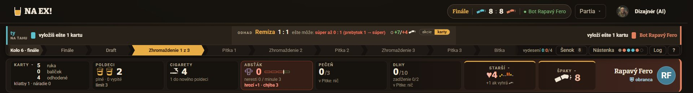
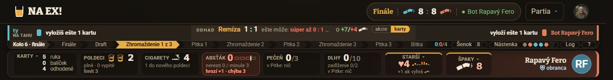
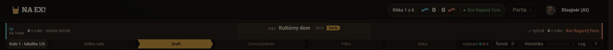
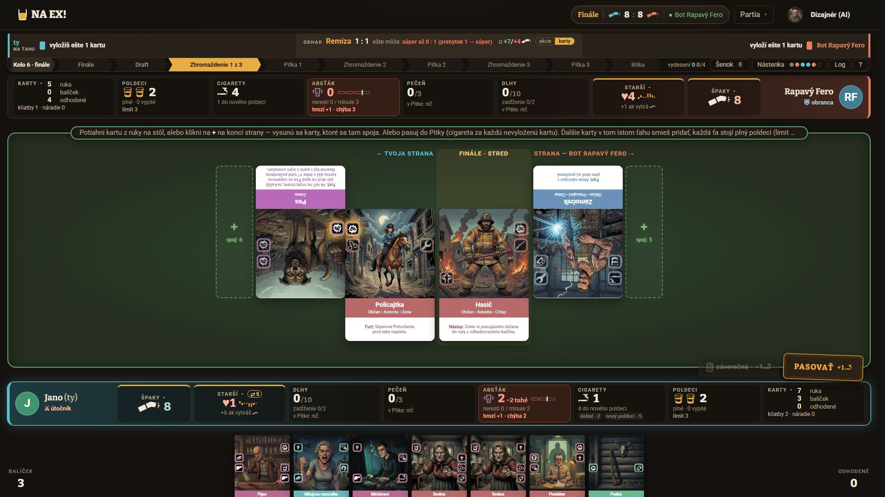
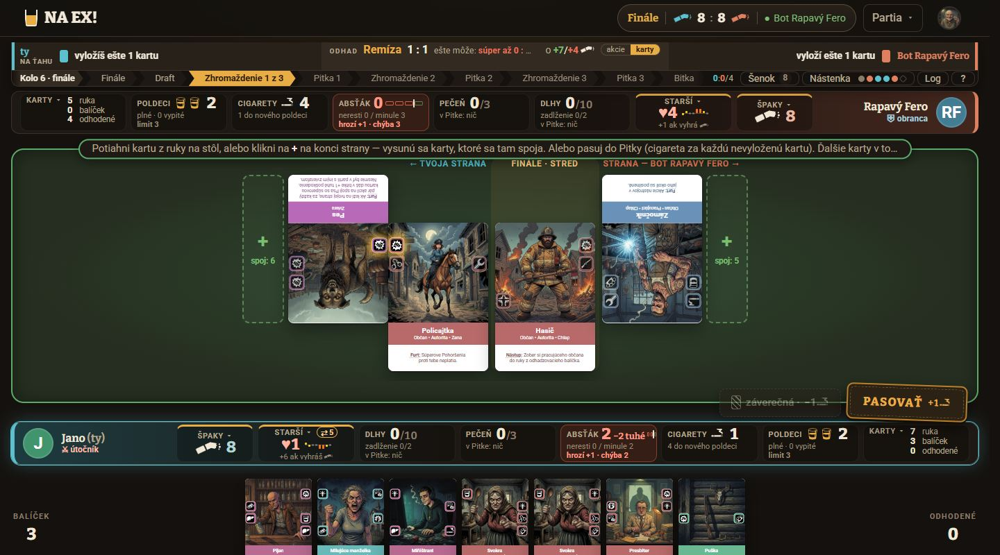
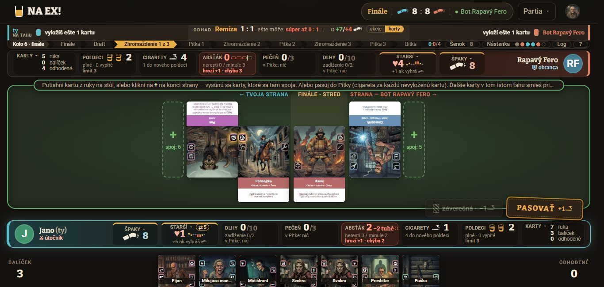

NA EX! · dizajn UI · cieľ: hlavička herného stola /hra (hlavička webu + jednotný bar) · 2026-10-27 · id timeline-lista-20261027 · UX návrh k tomuto zadaniu nie je · nadväzuje na dizajn-vyvoj-web-20261026-1520 (#22 štítok a „Partia ▾“) a bar V2
Os kola v hornej lište: mockupy
Verdikt. Pri stole je stred hlavičky webu prázdny: pri 1366 px okolo 670 px, pri 1920 px okolo 1 090 px. Os kola pritom zaberá na stole vlastný riadok vysoký 18 až 30 px. Štítok „Bitka 1 z 6 · 0 : 0 · súper“ opakuje tri veci, ktoré stôl už ukazuje inde.
Odporúčam variant A. Os pôjde do stredu lišty a štítok sa rozdelí: „Bitka 1 z 6“ sa stane hlavou osi namiesto „Kolo 1 · lokalita 1/5“, skóre ostane len v dlaždiciach Špaky a stav súpera sa presunie na jeho dlaždicu. Stôl získa 18 až 30 px na výšku a nič sa nezdvojí. Krčmový vzhľad z variantu D sa dá na A obliecť neskôr. Rozhodnúť treba jednu vec: či skóre z hlavičky naozaj zmizne (#22). Ak nie, zvoľ variant C.
1. Súčasný stav
Snímky som robil v ukážke stola (/hra/ukazka-stola?seed=8&lokalit=5) z origin/master e504005. Finále so Zhromaždením 1 z 3 je najdlhší prípad osi: 9 krokov a hlava. Tlačidlo „Nástenka ○○○○○◇“ ešte vidno, ruší ho vetva ui/nastenka-na-stole.

1920 × 1080, finále. „Finále“ je tu trikrát: v štítku, v hlave osi („Kolo 6 · finále“) a ako prvý krok osi. Skóre 8 : 8 je v štítku aj v oboch dlaždiciach Špaky.

1366 × 650. Hlavička má 52 px, os 18 px. Medzi logom a štítkom je ~670 px prázdneho miesta (x 145 až 815). „vydesení“ sa skrátilo na „0:0/4“.

1920, draft kola 1. Štítok počíta „Bitka 1 z 6“, os „Kolo 1 · lokalita 1/5“. Je to tá istá vec, počítaná dvakrát a inak.
Celé obrazovky (1920, 1440, 1366, finále)

1920 × 1080

1440 × 800

1366 × 650: z ruky vidno len hornú tretinu kariet. Každý pixel nad stolom tu chýba.
2. Audit hlavičky stola
#
Závažnosť
Problém
Dôkaz
U1
vysoká
Os kola má na stole vlastný riadok (30 / 23 / 18 px), kým stred hlavičky webu pri stole zíva prázdnotou. Pri 1366 × 650 je ruka orezaná a každý riadok sa počíta.
jbar.css:7–15, 486–523; snímka 1366 × 650
U2
vysoká
Postup partie sa počíta dvakrát a inak: štítok „Bitka 1 z 6“ a os „Kolo 1 · lokalita 1/5“. Vo finále je „Finále“ trikrát (štítok, hlava osi, prvý krok).
Skóre špakov je dvakrát: v štítku 8 : 8 a v dlaždiciach Špaky (8 a 8). Dlaždica je navyše vstup do nástenky Špakov (vetva ui/nastenka-na-stole), takže jej význam rastie.
HlavickaPartie.tsx:197–207; stol-1920-finale
U4
stredná
Meno súpera je trikrát: v štítku „● Bot Rapavý Fero“, na pravej strane baru a v jeho dlaždici „Rapavý Fero“. Stav pripojenia (●/○) pritom nesie len štítok, ďaleko od súperovej dlaždice.
HlavickaPartie.tsx:209–213; stol-1920-finale
U5
nízka
V riadku osi sú pomiešané stav kola a nástroje stola (Šenok, Log, ?). Keď Nástenka odíde, riadok sa aj tak musí prestavať, takže je to vhodná chvíľa.
HernaPlocha.tsx:5073–5110
U6
nízka
Pri 1366 px je os stlačená (kroky ~90 px) a „vydesení 0:0/4“ stratí popis. „0:0/4“ bez slova nikto nerozlúšti.
lista-1366-finale
U7
nízka
Kontrast osi je v poriadku: neaktívny krok --slaby-text na --plocha má 5,52 : 1, aktuálny --na-akcente na --akcent 8,35 : 1. Okraj štítka --okraj-svetly na --pozadie má 2,14 : 1, ale je dekoratívny (štítok nie je ovládací prvok).
prepočet podľa WCAG 2.2
3. Varianty: interaktívny mockup
Mockup je prekreslený v skutočných pixeloch zvoleného okna a zmenšený na šírku stránky. Používa tie isté tokeny a texty ako stôl. Zelené číslo v plsti ukazuje, koľko px na výšku línia získa oproti dnešku.
Variant
Okno
Stav
Dnes (master e504005)
Hlavička: logo, prázdny stred, štítok „krok · skóre · súper“, „Partia ▾“, účet. Jednotný bar má dva riadky: strany s odhadom a pod nimi os s nástrojmi. Čiarkovaný rámik v mockupe označuje tlačidlo Nástenka, ktoré sa práve ruší.
A · Os v strede lišty odporúčanýnáročnosť stredná
Kde je os
V strede hlavičky webu, medzi logom a nástrojmi (pruží, flex: 1). Výška 32 px pri hlavičke 64 px a 28 px pri 52 px. Popisy krokov sa skracujú podľa šírky osi (container query): pod 900 px „Zhrom. 2“, pod 720 px „Z2 / P2“. Aktuálny krok ostáva vždy celý.
Štítok sa rozdelí
„Bitka 1 z 6“ sa stane hlavou osi a nahradí „Kolo 1 · lokalita 1/5“, takže postup sa počíta jedným spôsobom. Vo finále je hlavou „Finále“ a prvý krok „Finále“ zmizne. Skóre ostane len v dlaždiciach Špaky. Mihnutie „+2“ a pozdržanie počas počítadla bitky (useSpakyVStitku) sa presunú do dlaždice. Súper ●/○ bude bodkou na avatare v jeho dlaždici. Keď je odpojený: ○ a „odpojený 1:48“ pod menom. Kód miestnosti (len hra s človekom) bude v tlačidle „Partia HZ3T ▾“, kopírovanie ostáva v menu.
Šenok · Log · ?
Do hlavičky naľavo od „Partia ▾“ ako skupina nástrojov stola. Šenok ostáva cieľom na pustenie karty.
vydesení 0:0/4
Do dlaždíc Starší, každému jeho číslo: „vydesení 0/4“ pod ♥. Pri 1366 × 650, kde podriadok dlaždice nie je, ako malý odznak „0/4“ pri nadpise STARŠÍ.
Uvoľní na stole
Celý druhý riadok baru: +30 px (1920, 1600), +23 px (1440 × 800), +18 px (1366 × 650). Bar má potom jeden riadok.
Zdvojenie
Nič. Postup je raz (os), skóre raz (dlaždice), súper raz s menom (bar) a raz s tvárou a stavom (dlaždica).
1366 × 650
Na os ostane ~780 px. Finále s 9 krokmi sa zmestí so skratkami „Zhrom. 2“; draft s 5 krokmi sa zmestí celý. Meno účtu je pod 1500 px skryté už dnes.
Pozor
Vo výučbe Melichar ukazuje na os (mel-hore, JednotnyBar.tsx:84–90). Jeho bublina bude ukazovať hore do lišty, treba posunúť kotvy data-vyucba. Tooltipy krokov sa otvárajú nadol cez bar, miesto majú.
Súbory
HlavickaPartie.tsx, hlavicka.css, stitokPartie.ts, Panely.tsx (PriebehKola: hlava, krátke popisy), JednotnyBar.tsx + jbar.css (jeden riadok), HernaPlocha.tsx (portál osi a nástrojov), dlaždice Špaky, Starší a hráča.
B · Tenký pás pod lištou náročnosť malá
Kde je os
Celá šírka okna tesne pod hlavičkou, ako súčasť lepkavej hlavičky (22 / 20 / 18 px). Na pravom konci sú vydesení, Šenok, Log a ?.
Štítok
Ostáva v lište bez kroku: „[popolník] 8 : 8 [popolník] · ● Bot Rapavý Fero“. „Bitka 1 z 6“ sa presunie na začiatok pásu ako hlava osi.
Uvoľní na stole
Takmer nič: +8 px (1920, 1600), +3 px (1440), 0 px (1366 × 650). Pás je len tenší než riadok baru.
Zdvojenie
Áno. Skóre ostáva v štítku aj v dlaždiciach, súper v štítku aj v bare.
Prínos
Poriadok: lišta je partia, pás je kolo, bar je bitka. Zo všetkých variantov je to najmenší zásah do rozhodnutia #22. Prázdny stred lišty však ostáva prázdny.
Súbory
Layout.tsx (miesto pre pás), styles.css, jbar.css, HernaPlocha.tsx, HlavickaPartie.tsx.
C · Zápasová pilulka náročnosť stredná
Kde je os
Štítok sa roztiahne cez stred lišty a os bude v ňom: „Bitka 1 z 6 › Voľba › Draft › … › Bitka | [popolník] 0 : 0 [popolník]“. Celý zápas je v jednom tvare, skóre je pri bitke, o ktorú ide.
Štítok
Krok a skóre ostávajú v lište, rovnako ako v rozhodnutí #22 vrátane mihnutia „+2“. Súper ●/○ sa presunie na jeho dlaždicu, kód do „Partia HZ3T ▾“.
Šenok · Log · ?
Ako v A, naľavo od „Partia ▾“. Vydesení ako v A, do dlaždíc Starší.
Uvoľní na stole
Ako A: +30 / +30 / +23 / +18 px.
Zdvojenie
Skóre áno (pilulka aj dlaždice Špaky), ostatné nie. Dá sa to obhájiť: lišta dáva rýchly pohľad, dlaždica je vstup do nástenky. Je to však ten istý údaj na dvoch miestach.
1366 × 650
Skóre zaberie ~110 px, na kroky ostane ~670 px. Finále preto ide v najkratšej podobe „Z2 · P2“. Draft sa zmestí so skratkami.
Súbory
Ako A, len HlavickaPartie.tsx obalí os namiesto toho, aby ju nahradila.
D · Tabuľa nad výčapom odvážnynáročnosť stredná až veľká
Kde je os
Rozloženie je ako v A, ale os je napísaná kriedou na tabuli v drevenom ráme, ako denné menu nad výčapom. Odohrané kroky sú prečiarknuté kriedou a aktuálny je zakrúžkovaný žltou kriedou, takže význam nesie tvar, nielen farba. Bitky sú čiarky ako na krčmovom účte: 5 lokalít a „F“, aktuálna zakrúžkovaná. Pri ≥ 900 px osi je vedľa aj text „Bitka 1 z 6“, inak je v aria-label a title.
Štítok
Rozdelí sa ako v A: skóre do dlaždíc Špaky, súper na jeho dlaždicu.
Nové tokeny
--krieda = mix --text 90 % s --plocha-3, --tabula = --zelena 8 % v --pozadie, --ram-tabule = --akcent-tmavy 42 % v --plocha-3. Všetky sú odvodené zo schémy (pravidlo: nové farby len cez tokeny zo schemy.css). Kontrast: krieda na tabuli ~13 : 1, odohraný krok (--slaby-text) ~5,7 : 1, budúci (--tlmeny) ~7,6 : 1.
Uvoľní na stole
Ako A: +30 / +30 / +23 / +18 px.
Zdvojenie
Nič.
Identita
Posilňuje ju: lišta pri stole prestane byť „webová“ a stane sa súčasťou krčmy. Mimo stola ostáva hlavička bez zmeny. Riziko je, že kriedový štýl nesmie skĺznuť do nečitateľnosti, preto je písmo Bitter, nie „ručné“ písmo.
Súbory
Ako A + schemy.css (3 tokeny), prípadne styles.css.
Porovnanie
Variant
Os
Bitka X z Y
Skóre
Súper ●
1920
1600
1440
1366 × 650
Zdvojí sa
Dnes
2. riadok baru
štítok + „Kolo 1 · lokalita 1/5“
štítok + dlaždice
štítok
0
0
0
0
krok, skóre, súper
A
stred lišty
hlava osi
dlaždice Špaky
jeho dlaždica
+30
+30
+23
+18
nič
B
pás pod lištou
hlava pásu
štítok + dlaždice
štítok
+8
+8
+3
0
skóre, súper
C
pilulka v lište
hlava pilulky
pilulka + dlaždice
jeho dlaždica
+30
+30
+23
+18
skóre
D
tabuľa v lište
čiarky na tabuli
dlaždice Špaky
jeho dlaždica
+30
+30
+23
+18
nič
Čísla sú px na výšku, ktoré získa línia (plsť) oproti dnešku. Vychádzajú z výšok riadkov baru v jbar.css (30 / 30 / 23 / 18 px) a pásu vo variante B (22 / 22 / 20 / 18 px). Zrušená Nástenka uvoľní ~150 px na šírku v každom variante.
4. Odporúčanie a poradie
Najprv dokončiť vetvu ui/nastenka-na-stole (Nástenka z osi preč, dlaždica Špaky otvára nástenku). A nadväzuje na dlaždicu Špaky ako jediný domov skóre.
Variant A naraz: os do lišty s hlavou „Bitka X z Y“, Šenok · Log · ? do lišty, bar na jeden riadok, mihnutie „+2“ do dlaždice Špaky, ●/○ na dlaždicu súpera, vydesení do dlaždíc Starší. Polovičný krok (os v lište a štítok tiež) by na chvíľu ukázal „Bitka 1 z 6“ dvakrát vedľa seba.
Overiť snímkami pri 1366 × 650 vo finále (9 krokov) a vo výučbe (Melichar ukazuje na os).
Neskôr, ak sa Michalovi páči: kriedový vzhľad D ako koža osi v lište. Mení len CSS a pridáva 3 tokeny.
5. Otázky na Michala
Skóre z lišty preč? V #22 si chcel štítok so špakmi v hlavičke. A ho ruší v prospech dlaždíc Špaky (bez zdvojenia). Ak ho chceš v lište mať, zvoľ C.
Jedno počítanie: súhlasíš, že os bude počítať „Bitka 1 z 6“ a „Kolo 1 · lokalita 1/5“ zmizne?
Šenok · Log · ? do lišty vedľa „Partia ▾“, alebo ich chceš nechať v bare (napr. na pravom okraji strany súpera)?
„vydesení 0:0/4“ do dlaždíc Starší (každému jeho číslo)?
Krieda (D): chceš krčmovú tabuľu, alebo ostať pri šípkových pilulkách, ktoré poznáš zo starej osi?